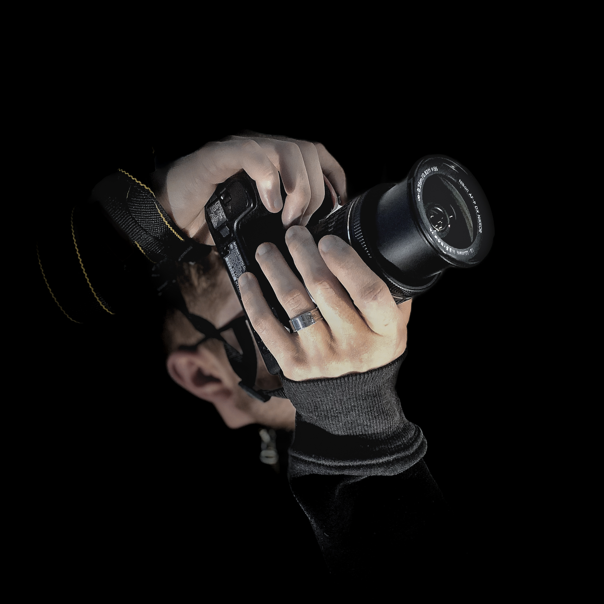

Santiago Ernesto Ares Migliorini, nacido el 13 de noviembre de 2003 en Montevideo, Uruguay, es un destacado fotoperiodista y fotógrafo social. Su trayectoria comenzó en el bachillerato, cuando cursaba Derecho, y fue durante ese tiempo que su pasión por la fotografía emergió. En 2022, mientras recursaba una materia, comenzó a explorar la fotografía documentando movilizaciones con una cámara que había adquirido recientemente.

Su interés por la fotografía venía desde la niñez, siempre fascinado por el trabajo de los fotógrafos. Desde muy pequeño, Santiago mostró una profunda fascinación por el cine y las películas. Inspirado por cómo los filmes capturaban la esencia de las historias y emociones, se sumergió en el mundo de la imagen visual. Esta pasión temprana, junto con su interés por la política y los movimientos sociales, fue la base sólida sobre la que construiría su carrera como fotoperiodista y fotógrafo social. Con el tiempo, se dedicó a aprender y perfeccionar su técnica. A finales de 2021, a la edad de 18 años, obtuvo acceso a una modesta cámara, la cual sería el catalizador de su carrera como fotógrafo. Sin embargo, no fue hasta mayo de 2022, durante la Marcha del Silencio en Uruguay, cuando Santiago comenzó a salir a las calles a capturar imágenes que reflejaban la esencia de los eventos sociales y políticos de su país, marcando así el inicio de su incursión en el fotoperiodismo.
A lo largo de 2022 y 2023, Santiago se destacó documentando manifestaciones, paros gremiales, marchas feministas y del orgullo LGBT, así como otras expresiones de activismo social. Su trabajo ganó reconocimiento por su capacidad para capturar momentos significativos y transmitir la intensidad emocional de cada evento.
En 2023, Santiago ingresó a la Universidad de Bellas Artes de Uruguay, compaginando sus estudios con su creciente actividad como fotoperiodista. Su enfoque en la fotografía social y activista le permitió colaborar con importantes organizaciones políticas del país y retratar a diversas figuras artísticas y políticas.
...
...
Para más información, puedes seguir a Santiago en sus redes sociales: